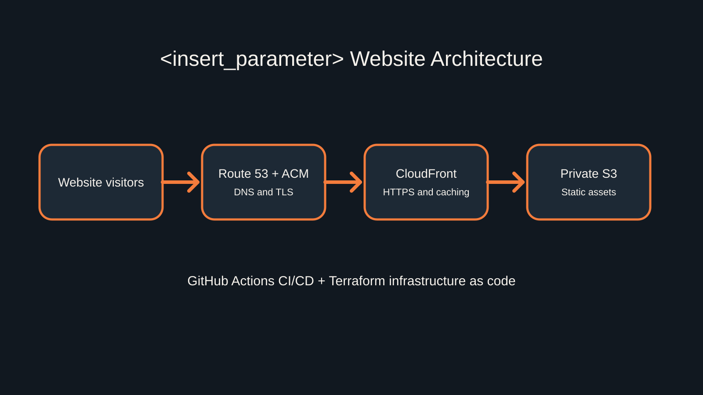

01 / Featured architecture
Secure static website delivery
A private origin, global content delivery, managed TLS, and infrastructure defined as code.
Read case studyI design secure, scalable AWS architectures and document the thinking that makes them reliable.
View selected workSelected work
A detailed look at the architecture, security decisions, and delivery workflow behind this website.
Approach
Identity, data protection, and least privilege are considered from the first diagram.
Failure modes, recovery paths, and operational visibility shape every solution.
Decisions are documented so systems remain understandable, repeatable, and maintainable.
Next step